Фотопортфоліо
Знімаю для себе: міста, гори, дрібниці під ногами та людей у гарному світлі. Натисніть на фото, щоб відкрити його великим.
-
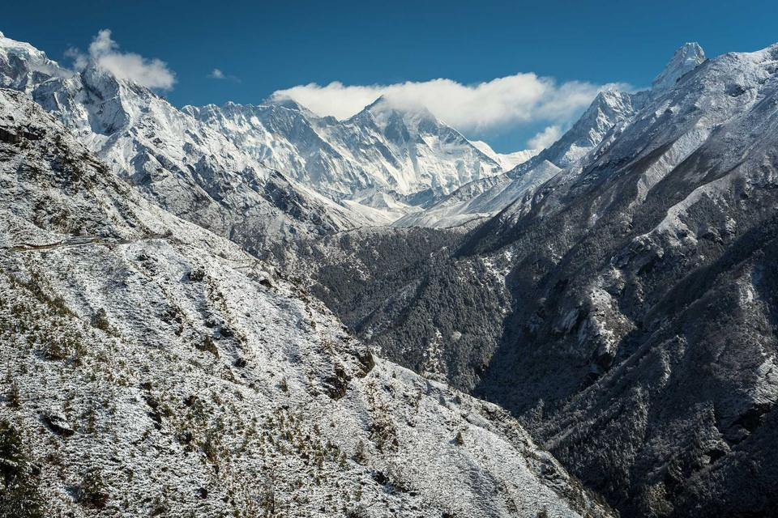
= 64rem) 46rem, 100vw" width="960" height="640" alt="Скелясті гірські хребти під снігом у сірому світлі">Тиша вершин Go Wild · Unsplash -

Нічний міст Oleg Chursin · Unsplash -
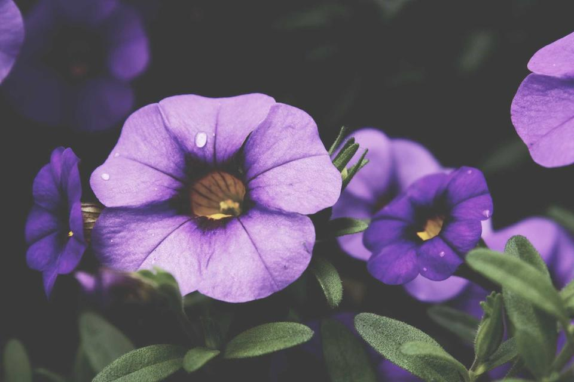
= 64rem) 23rem, (width >= 40rem) 50vw, 100vw" width="960" height="640" loading="lazy" alt="Фіолетові квіти петунії зблизька">Петунії Steven Spassov · Unsplash -
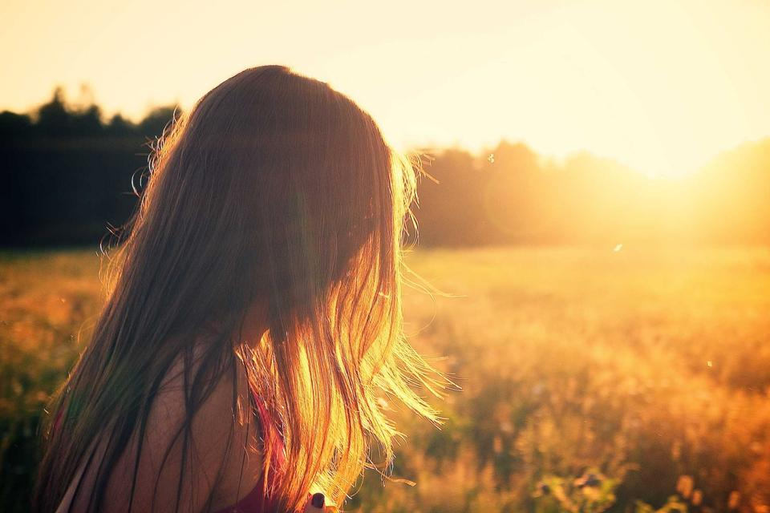
= 64rem) 23rem, (width >= 40rem) 50vw, 100vw" width="960" height="640" loading="lazy" alt="Дівчина з довгим волоссям у полі в теплому світлі заходу">Золота година Alexander Shustov · Unsplash -
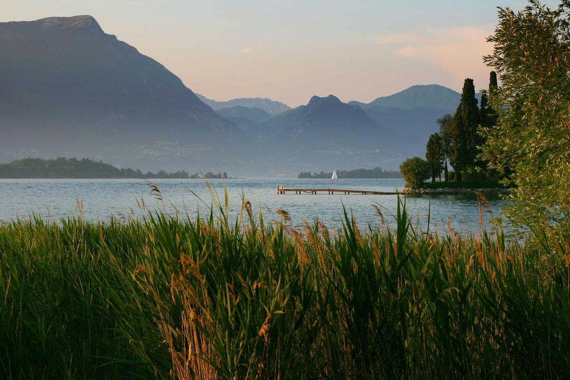
= 64rem) 23rem, (width >= 40rem) 50vw, 100vw" width="960" height="640" loading="lazy" alt="Гірське озеро з високою травою на передньому плані">Озеро в горах Matteo Minelli · Unsplash -

Вулиця вранці Nicholas Swanson · Unsplash -
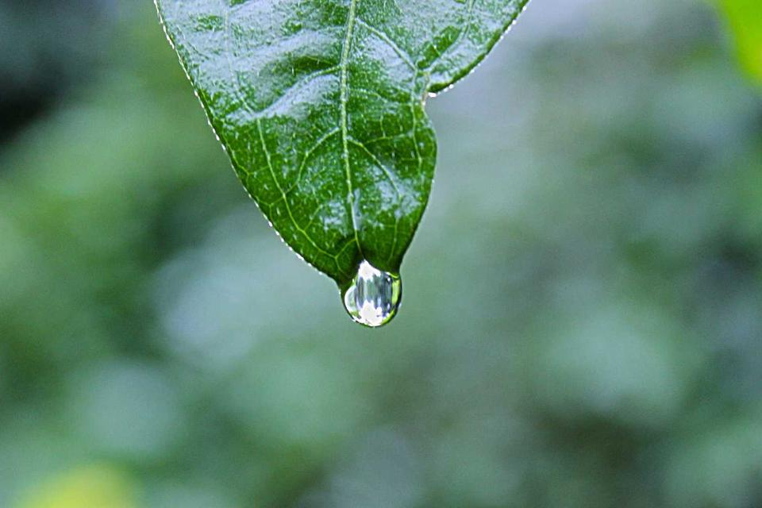
= 64rem) 23rem, (width >= 40rem) 50vw, 100vw" width="960" height="640" loading="lazy" alt="Крапля води на кінчику зеленого листка">Після дощу Shyamanta Baruah · Unsplash -
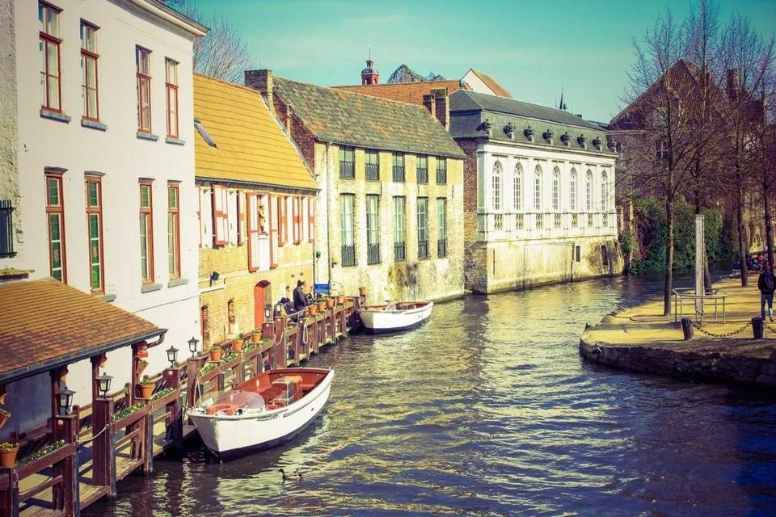
= 64rem) 46rem, 100vw" width="960" height="640" loading="lazy" alt="Канал у старому місті з човнами й кольоровими будинками">Місто на воді Linh Nguyen · Unsplash -
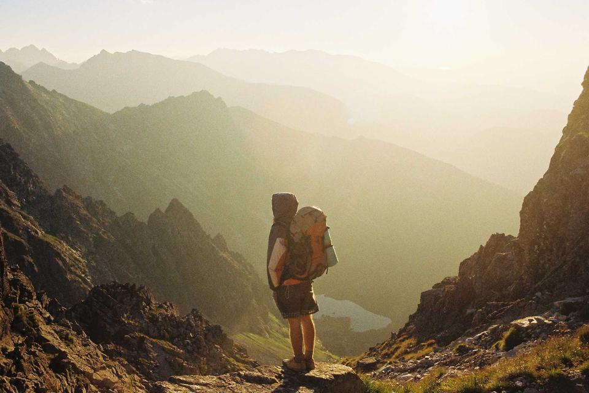
= 64rem) 23rem, (width >= 40rem) 50vw, 100vw" width="960" height="640" loading="lazy" alt="Мандрівник з рюкзаком у туманній гірській долині">Дорога вгору Danka & Peter · Unsplash -
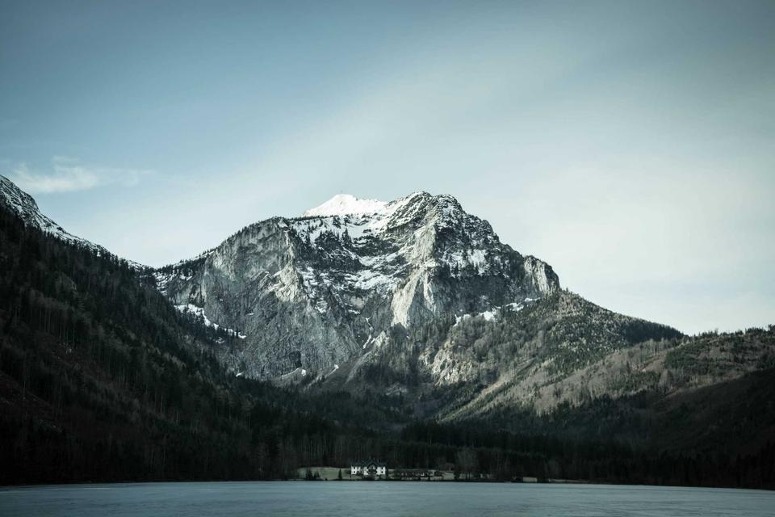
= 64rem) 23rem, (width >= 40rem) 50vw, 100vw" width="960" height="640" loading="lazy" alt="Засніжена гірська вершина над зеленим схилом">Снігова шапка Paul E. Harrer · Unsplash -

Цвітіння Rula Sibai · Unsplash -
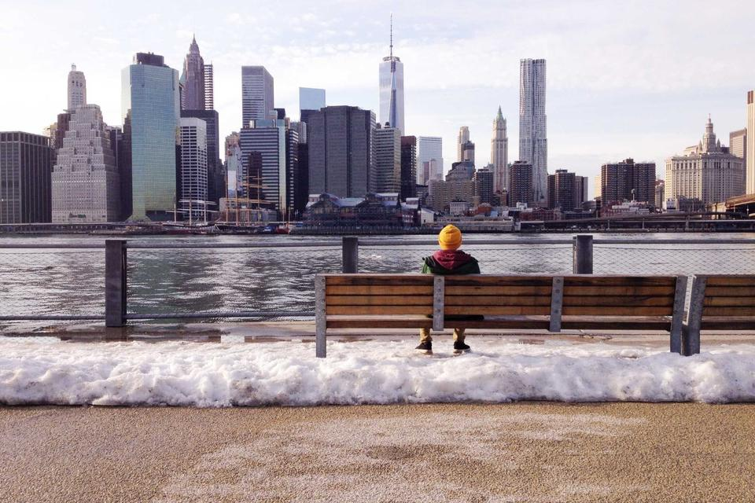
= 64rem) 23rem, (width >= 40rem) 50vw, 100vw" width="960" height="640" loading="lazy" alt="Людина на лавці біля води дивиться на хмарочоси">Погляд на місто Namphuong Van · Unsplash -
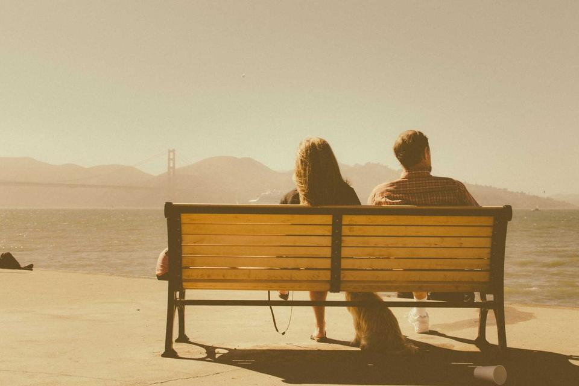
= 64rem) 23rem, (width >= 40rem) 50vw, 100vw" width="960" height="640" loading="lazy" alt="Двоє людей на дерев'яній лавці дивляться на море">Двоє біля моря Charlie Foster · Unsplash -
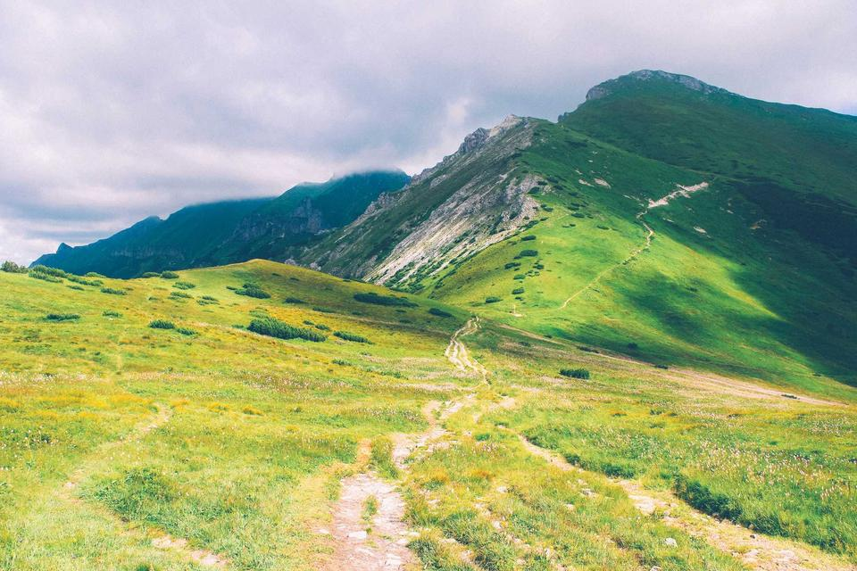
= 64rem) 23rem, (width >= 40rem) 50vw, 100vw" width="960" height="640" loading="lazy" alt="Зелені пагорби зі стежкою під хмарним небом">Зелені пагорби Aleksandra Boguslawska · Unsplash -
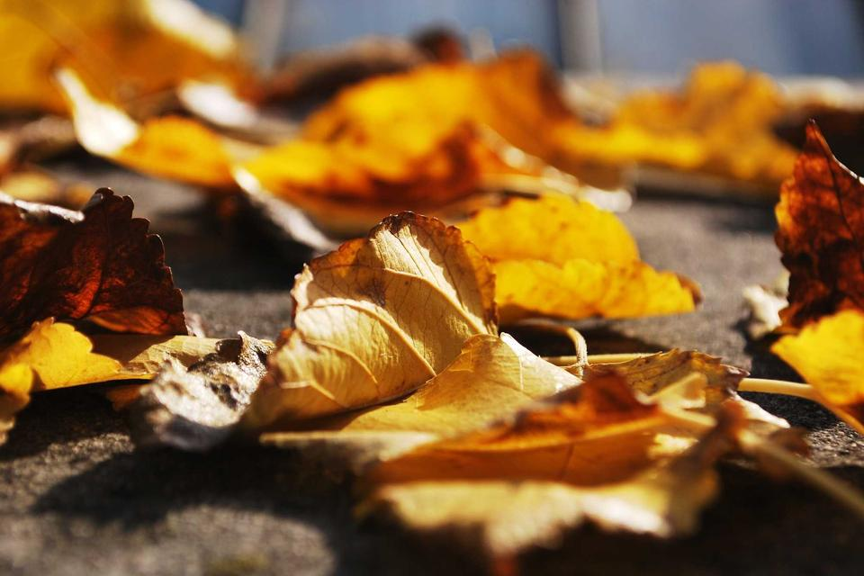
= 64rem) 23rem, (width >= 40rem) 50vw, 100vw" width="960" height="640" loading="lazy" alt="Опале жовте осіннє листя зблизька">Жовтень petradr · Unsplash -
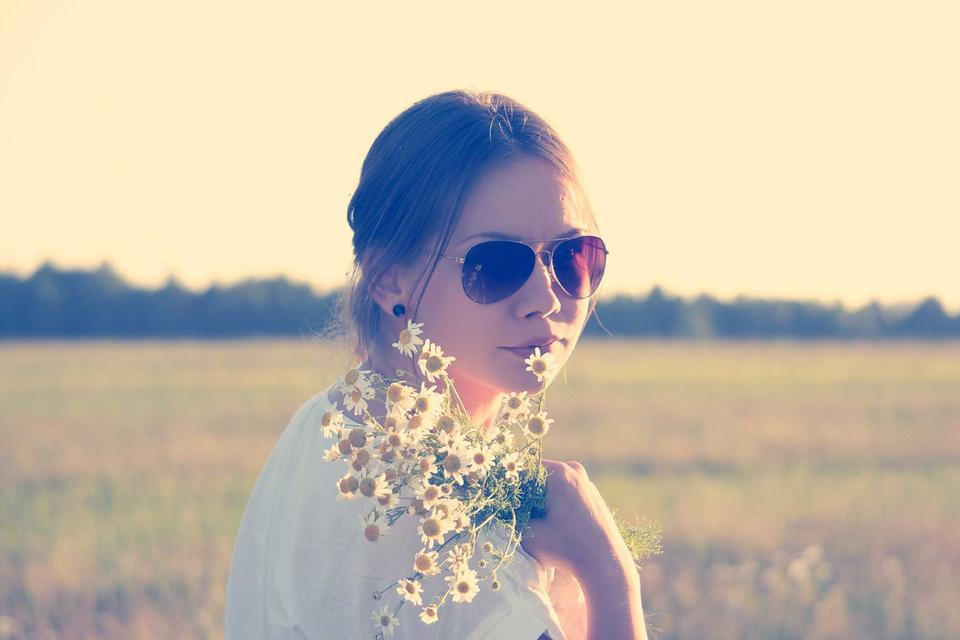
= 64rem) 23rem, (width >= 40rem) 50vw, 100vw" width="960" height="640" loading="lazy" alt="Дівчина в сонцезахисних окулярах з польовими квітами">Польові квіти Alexander Shustov · Unsplash


Чим знімаю
- Камера
- Стара плівкова дальномірка і бюджетна бездзеркалка для щоденних прогулянок.
- Об'єктиви
- Фікс 35 мм — для міста й людей, 50 мм — для портретів і дрібниць.
- Обробка
- Lightroom: легка корекція світла й кольору, без важких фільтрів.
Звідки фото
Поки що в галереї — фото-заглушки з Unsplash (безкоштовна ліцензія, без водяних знаків). Автор кожного фото підписаний під ним. Згодом тут будуть мої власні кадри.